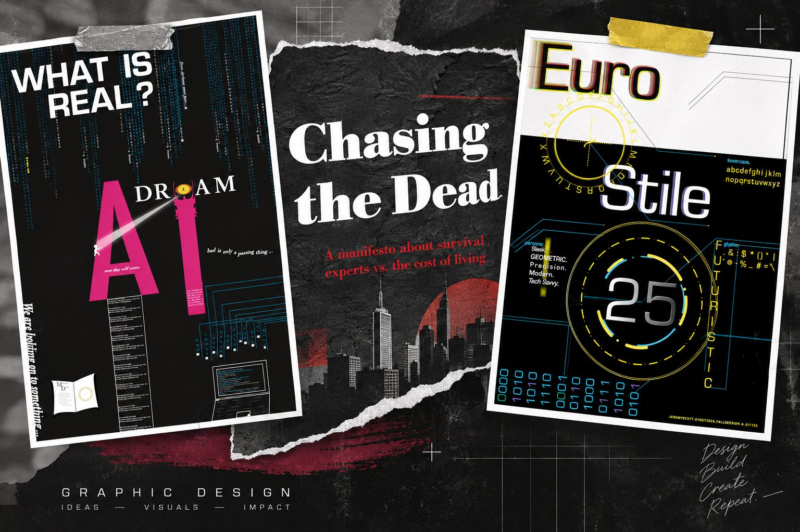
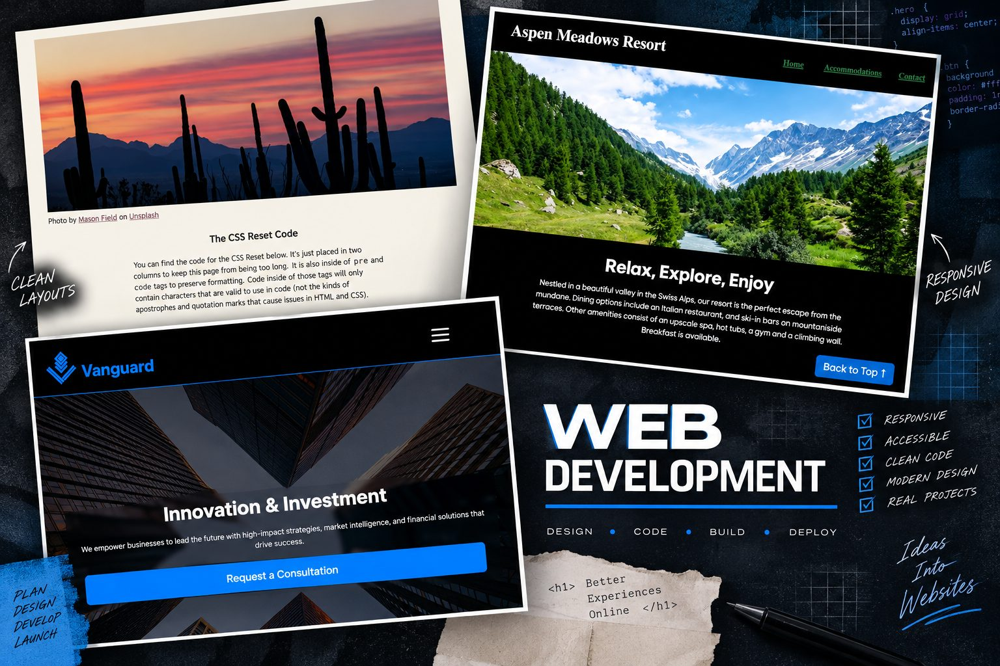

Graphic Design Projects
Selected poster, typography, and visual design work from my portfolio.
View Graphic Design ProjectsI'm a full-stack web developer and designer who enjoys building responsive, accessible websites and visual projects.


Selected poster, typography, and visual design work from my portfolio.
View Graphic Design Projects
Checkout the Responsive websites I've worked on for recent projects.
View Web Development ProjectsA motion graphics project featuring the Midnight Line visual world and animation work.
If the embedded player does not load, click here to watch Momo's Midnight Line - 005 |Snowfall Terminal Lofi music video on YouTube.